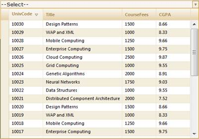

To sort in JSON mode using Builder:
Create a model in the application. Refer to Getting Started>Adding a Model to the Application.
JSON mode uses ASP.NET AJAX 4.0 Client templates for displaying the grid. Add the MicrosoftAjax.js and MicrosoftAjaxTemplates.js files in the view as follows:
These can be downloaded from the following location: http://ajaxcontroltoolkit.codeplex.com/releases/view/36097#DownloadId=93514
|
[Site.Master] <head runat="server"> <script src="<%= Url.Content("~/Scripts/Templates/MicrosoftAjax.js") %>" type="text/javascript"></script> <script src="<%= Url.Content("~/Scripts/Templates/MicrosoftAjaxTemplates.js") %>" type="text/javascript"></script> </head>
|
|
[_Layout.cshtml] <head runat="server"> <script src="@Url.Content("~/Scripts/Templates/MicrosoftAjax.js")" type="text/javascript"></script> <script src="@Url.Content("~/Scripts/Templates/MicrosoftAjaxTemplates.js")" type="text/javascript"></script> </head>
|
Create a row template for rendering the records’ rows and setting its CSS display property as none.
|
[ASPX] <table> <tr id="RowTemplate" style="visibility: hidden; display: none"> <td class="RowHeader"> </td> <td class="RowCell"> {{OrderID}} </td> <td class="RowCell"> {{CustomerID}} </td> <td class="RowCell"> {{EmployeeID}} </td> <td class="RowCell"> {{ShipCountry}} </td> <td class="RowCell"> {{ShipCity}} </td> </tr> </table> |
In the view, create the MultiColumnDropDown control and configure its properties.
|
View [ASPX]
<%=Html.Syncfusion().MultiColumnDropDown<Student>("MultiColumnDropDown") .Datasource((IEnumerable) ViewData["data"]) .DisplayExpression(new int[] {2, 3, 5}) .Width(500) .Text("--Select--") %> |
|
View [cshtml]
@(new HtmlString(Html.Syncfusion().MultiColumnDropDown<Student>("MultiColumnDropDown") .Datasource((IEnumerable) ViewData["data"]) .DisplayExpression(new int[] {2, 3, 5}) .Width(500) .Text("--Select--").ToString()))
|
Enable/disable the sorting feature using the AllowSorting() method, set the JSON mode using ActionMode, and set the ItemTemplateID using ItemTemplate.
|
View [ASPX]
<%=Html.Syncfusion().MultiColumnDropDown<Student>("MultiColumnDropDown") .Datasource((IEnumerable) ViewData["data"]) .DisplayExpression(new int[] {2, 3, 5}) .Width(500) .AllowSorting(true) .ActionMode("JSON") .ItemTemplate("RowTemplate") .Text("--Select--") %>
|
|
View [cshtml]
@(new HtmlString(Html.Syncfusion().MultiColumnDropDown<Student>("MultiColumnDropDown") .Datasource((IEnumerable) ViewData["data"]) .DisplayExpression(new int[] {2, 3, 5}) .Width(500) .AllowSorting(true) .ActionMode("JSON") .ItemTemplate("RowTemplate") .Text("--Select--").ToString()))
|
Set its data source and render the view.
|
Controller /// <summary> /// Used to get the JSON Order from Northwind Datacontext /// </summary> private IList<JSONOrder> Student { get { List<JSONOrder> result = (from o in new StudentDataContext().AutoFormatStudent select new JSONOrder { UniversityCode = o.UniversityCode, Title = o.Title, CourseFees = o.CourseFees, CGPA = o.CGPA, ShipCountry = o.ShipCountry }).ToList(); return result; } }
|
|
Controller
/// <summary> /// Used for rendering the MultiColumnDropDown initially. /// </summary> /// <returns>View page, it displays the MultiColumnDropDown</returns> public ActionResult Index() {
var Data = this.Student; ViewData["data"] = Data; return View(Data); } |
For example, when the user tries to sort the column by clicking on the column header, the request will be sent to the controller from the UI (view).
The controller gets the JSON sorting request and prepares a query for processing. The sorting request is processed by Index HttpPost method. The required data is fetched according to the query from the database and the response is sent to the view which is illustrated in the following code.
|
Controller
/// <summary> /// Sorting request is mapped to this method. /// </summary> /// <returns>JSON data is returned.</returns> [AcceptVerbs(HttpVerbs.Post)] public ActionResult Index(PagingParams args) {
IEnumerable data = this.Orders; var ds = this.Orders;
IOrderedEnumerable<MvcSampleApplication.Models.JSONOrder> orderedQuery = null; // Apply sorting to data source. if (args.SortDescriptors != null) { for (int i = 0; i < args.SortDescriptors.Count; i++) { var sortColumnName = args.SortDescriptors[i].ColumnName; if (i == 0) {
if (args.SortDescriptors[i].SortDirection == ListSortDirection.Ascending) { orderedQuery = ds.OrderBy(c => c.Field(sortColumnName)); } else if (args.SortDescriptors[i].SortDirection == ListSortDirection.Descending) { orderedQuery = ds.OrderByDescending(c => c.Field(sortColumnName)); } } else { if (args.SortDescriptors[i].SortDirection == ListSortDirection.Ascending) { orderedQuery = orderedQuery.ThenBy(c => c.Field(sortColumnName)); } else if (args.SortDescriptors[i].SortDirection == ListSortDirection.Descending) { orderedQuery = orderedQuery.ThenByDescending(c => c.Field(sortColumnName)); } } } } data = orderedQuery;
return Json(data); }
|
Run the application. The MultiColumnDropDown control will appear as shown in the following screenshot.

Figure 324: Sorting Enabled MultiColumnDropDown Control

Figure 325: “UnivCode” Column is Sorted by Descending Order